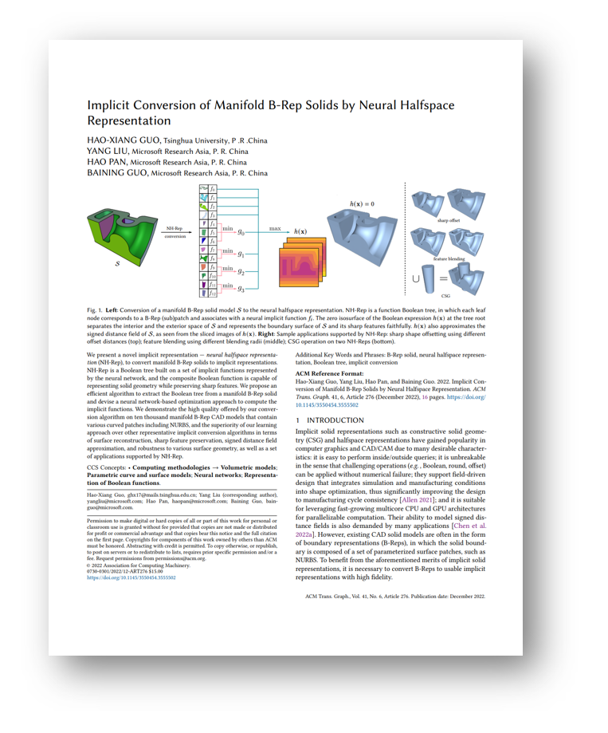

We present a novel implicit representation -- neural halfspace representation, to convert manifold B-Rep solids to implicit representation. NH-Rep is a Boolean tree built on a set of implicit functions represented by neural network, and the composite Boolean function is capable of representing solid geometry while preserving sharp features. We propose an efficient algorithm to extract the Boolean tree from a Manifold B-Rep solid and devise a neural-network-based optimization approach to compute implicit functions.
We demonstrate the high quality offered by our conversion algorithm on ten thousand manifold B-Rep CAD models that contain various curved patches including NURBS, and the superiority of our learning approach over other representative implicit conversion algorithms in terms of surface reconstruction, sharp feature preservation, signed distance field approximation, and robustness to various surface geometry, as well as applications supported by NH-Rep.
|

|
Paper [PDF]
Code [Github]
Citation [BibTeX]
Hao-Xiang Guo, Yang Liu, Hao Pan and Baining Guo. 2022. NH-Rep: Neural Halfspace Representations for Implicit Conversion of B-Rep Solids. ACM Trans. Graph. 41, 6, Article 276 (2022), 15 pages.
|